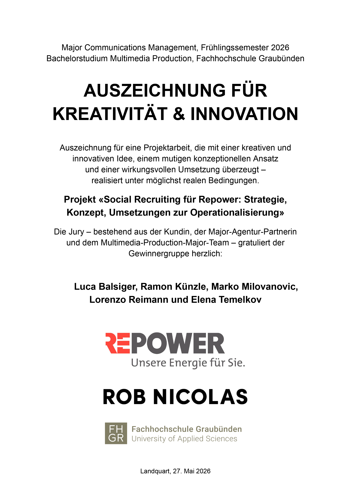

Corporate Communications
Planung konsistenter Kommunikation für interne und externe Anspruchsgruppen.
Marke & Kommunikation
Ich entwickle Kommunikation, die strategische Unternehmensziele mit den Bedürfnissen unterschiedlicher Anspruchsgruppen verbindet.
Mein Ansatz
Im Communications Management beschäftige ich mich mit der strategischen Planung, Gestaltung und Koordination von Unternehmenskommunikation.
Dabei analysiere ich Zielgruppen, Kommunikationskanäle und bestehende Wahrnehmungen. Daraus entwickle ich Botschaften und Massnahmen, die zur Identität und zu den Zielen einer Organisation passen.
Entscheidend ist für mich, dass Kommunikation nicht nur Aufmerksamkeit erzeugt. Sie soll glaubwürdig sein, Orientierung bieten und langfristig zu einer klaren Wahrnehmung der Organisation beitragen.
Kompetenzen
Planung konsistenter Kommunikation für interne und externe Anspruchsgruppen.
Entwicklung von Botschaften und Inhalten, die zur Identität und Positionierung einer Marke passen.
Übersetzung komplexer Themen in verständliche, glaubwürdige und relevante Geschichten.
Kommunikationsstrategie & Corporate Wording
Für Trikot.ch entwickelten wir eine strategische Grundlage, die Positionierung, Zielgruppe, Kernbotschaften und Massnahmen mit einer eigenständigen Markensprache verbindet.
Projekt ansehenPodcaststrategie & Corporate Social Media
Für die Pädagogische Hochschule Bern entwickelten wir mit RealTalk ein community-getriebenes Podcastkonzept. Das Format verbindet persönliche Geschichten, fachliche Perspektiven und eine kanalübergreifende Vermarktungsstrategie.
Projekt ansehenCorporate Communications Projekt
Im Rahmen einer Gruppenarbeit im Major Communications Management entwickelten wir für Repower ein Social-Recruiting-Konzept mit Fokus auf die Bereiche Netzbau und Instandhaltung.
Technische Fachkräfte sind stark umkämpft. Gleichzeitig sind die Bedeutung der entsprechenden Berufe und die Qualitäten von Repower als Arbeitgeberin bei vielen potenziellen Bewerber:innen noch wenig bekannt.
Repower wurde als regionale, glaubwürdige und verantwortungsvolle Arbeitgeberin positioniert. Im Zentrum stehen Sinnhaftigkeit, Teamzusammenhalt, Naturverbundenheit und Versorgungssicherheit.
Die Leitidee «Ohne dich funktioniert nichts» macht sichtbar, welche Bedeutung die Mitarbeitenden für den Alltag, die Infrastruktur und die Energiewende besitzen.
Die Botschaft wurde in Hero-, Hub- und Help-Content übersetzt und entlang der Candidate Journey für Instagram, TikTok und LinkedIn geplant.
Kommunikationsperspektive
Die Stärken von Repower wurden nicht nur aufgezählt, sondern in konkrete Botschaften für potenzielle Mitarbeitende übersetzt.
Die Kommunikation orientiert sich an den Bedürfnissen, Erwartungen und Entscheidungstreibern der gesuchten technischen Fachkräfte.
Statt einer künstlichen Hochglanzdarstellung setzt das Konzept auf echte Mitarbeitende, reale Arbeitssituationen und die regionale Verankerung in Graubünden.
Die Leitidee verbindet verschiedene Formate und Kanäle zu einem konsistenten kommunikativen Gesamtauftritt.
Zusammenarbeit
Das Projekt entstand im Frühlingssemester 2026 als Gruppenarbeit im Major Communications Management an der FH Graubünden.
Gemeinsam mit Luca Balsiger, Ramon Künzle, Lorenzo Reimann und Elena Temelkov entwickelten wir die Strategie, das Kreativkonzept und die geplanten Kommunikationsmassnahmen.
Wirkung und Anerkennung
Das Projekt wurde mit der Auszeichnung für «Kreativität & Innovation» gewürdigt. Die Jury hob die kreative Idee, den mutigen konzeptionellen Ansatz und die wirkungsvolle Umsetzung hervor.
Repower veröffentlichte zudem einen offiziellen LinkedIn-Beitrag über die Zusammenarbeit mit der FH Graubünden und das entwickelte Social-Recruiting-Konzept.
